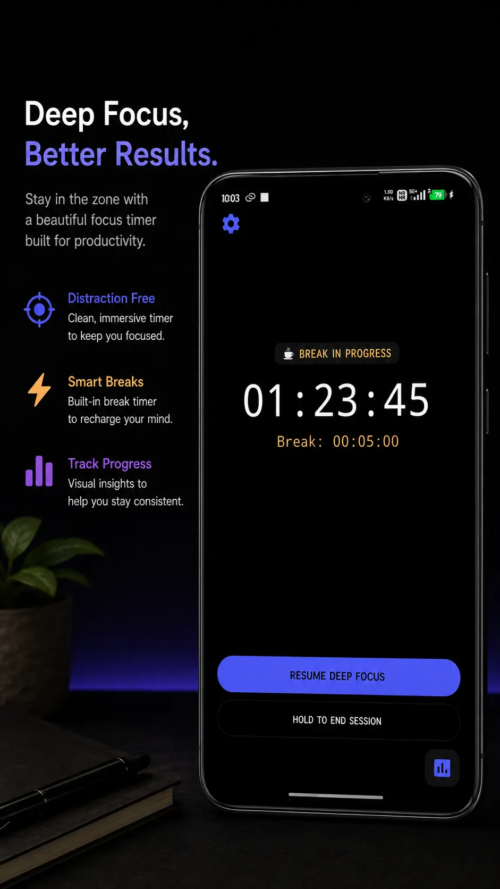
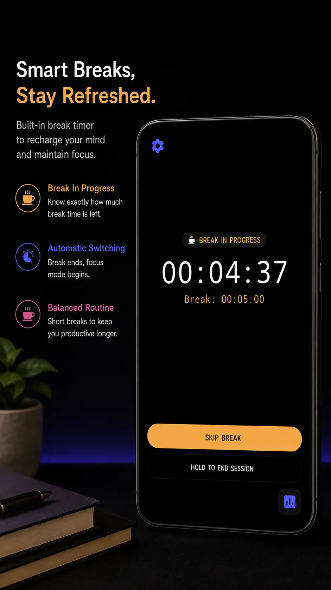
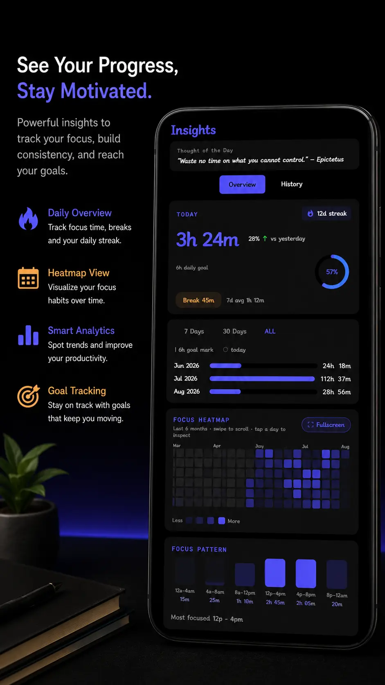
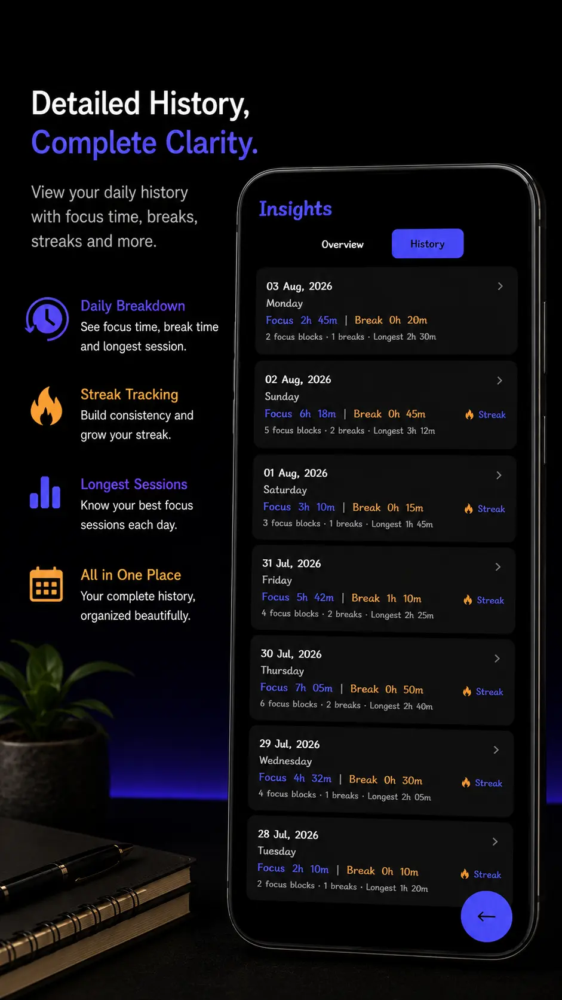
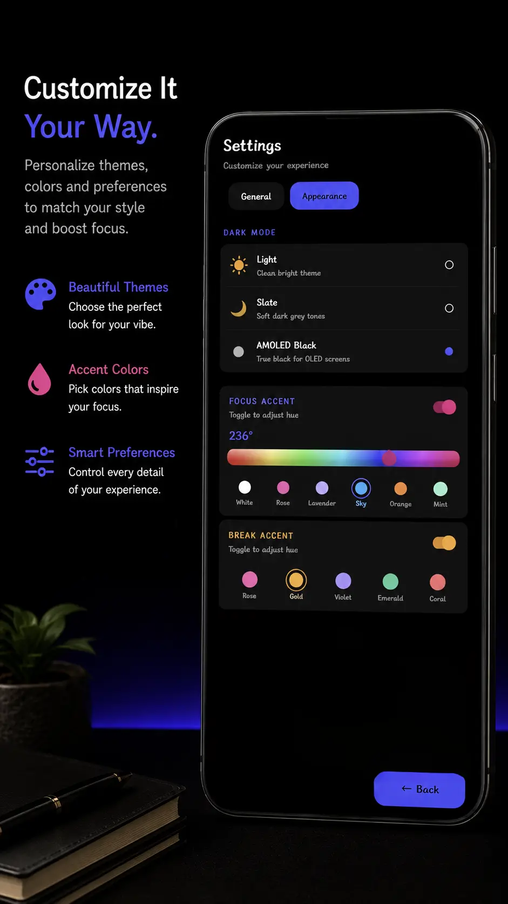
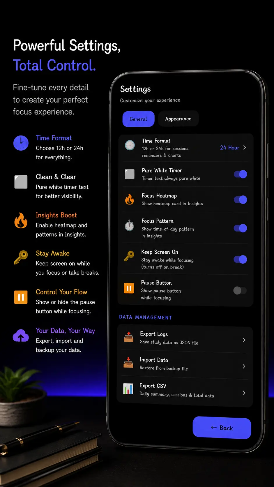

Focus, Track & Plan
Crush your academic goals with a clean, distraction-free study timer, intelligent lecture manager, and powerful habits planner.
Latest Version: v1.4.1
Key Features
Everything you need to master exams, manage university lectures, and build long-term focus habits.
Flexible Focus & Pomodoro
Pomodoro countdowns, fluid stopwatches, and custom target sessions with smart tactile haptic feedback.
Interactive Lecture Mode
Class duration tracking with smart session end prompts, quick extensions, and automatic break fallbacks.
Daily Planner & Tasks
Set custom daily target goals, track multi-goal progress, and see precise remaining study time calculations.
6-Month Focus Heatmaps
Visualize long-term study consistency, pinpoint peak productive hours, and track accurate daily streaks.
AMOLED & Slate Themes
Soft dark modes designed for late-night sessions to save battery and eye strain with custom accent colors.
Immersive Landscape Mode
Hide system notification bars for completely distraction-free deep work on desks or tablets.
100% Offline & Private
Zero data collection, zero server tracking, zero ads, and full JSON/CSV log export and import support.
Independent Focus & Breaks
Run standalone focus sessions, isolated breaks, or standard sequential cycles on your own terms.
Historical Accuracy
Per-day target tracking ensures your historical study logs, streaks, and weekday averages remain exact.
Minimalist & Distraction-Free
Designed to optimize focus, manage classes, and respect your privacy.






Ready to focus?
Download the latest release and start studying better today.
- Version v1.4.1
- Requirements Android 9+
- Size 2.91 MB
Free & Open Source